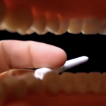

Abascal celebra el resultado y da las gracias a los votantes, a los interventores y a Pedro Sánchez por la segunda oportunidad
Pedro Sánchez: «Habéis vuelto a votar mal, imbéciles»
Cientos de votantes de Ciudadanos se congregan frente a la sede del partido para gritar “Con Rivera no”
Un perro con una GoPro es, en estos momentos, el único periodista acreditado por Vox para entrar en su sede
Tras las críticas, Pedro Sánchez se disculpa por acudir al colegio electoral con el pene fuera
Un ciudadano en armadura pregunta indignado dónde están las papeletas para votar al Señor de Rocavieja
Los votantes del PP apoyan en masa a Pablo Casado contestando «Ok gracias» a su SMS
En un mensaje de concordia, Casado promete ser el presidente de todos los españoles, de los que le están votando y de los que no votarán absolutamente nada
Los ciudadanos vascos tendrán que demostrar que pueden levantar una piedra de 70 kilos para poder votar al PNV
La Junta Electoral anuncia que los votos a Vox que se efectúen bajo la influencia del alcohol no serán contabilizados
todos los programas electorales
"Más patio" y otros puntos del programa de más país
"Primer la República i després els altres temes" y otros puntos básicos de ERC
Incentivos para las empresas con koalas en su junta directiva y otros puntos básicos del programa de PACMA
Ni un solo vasco sin su piedra y otros puntos básicos del programa del PNV
«Un torero, un médico» y otros puntos básicos del programa de Vox
Más y mejores colegios públicos en Galapagar y otros puntos básicos del programa de Unidas Podemos
«Ni parados ni trabajadores: solo españoles» y otros puntos básicos del programa de Ciudadanos
Un máster para cada español y otros puntos básicos del programa del Partido Popular
Francisco Nicolás ya supera a Pedro Sánchez en intención de voto tras participar en el «Roast Battle» de Comedy Central
Comedy Central cancela el «Roast Battle» con Pérez-Reverte porque nadie se ha atrevido a enfrentarse a él
La Junta Electoral Central Central ha obligado al PSOE a retirar la sábana con el mensaje «STOP DESAHUCIOS» que ha aparecido en la fachada de La Moncloa
Decideix donar un cop d’estat i abolir la democràcia perquè li ha tocat ser president d’una mesa electoral
Los jugadores de las casas de apuestas ya prefieren apostar sobre qué local del barrio se convertirá en otra casa de apuestas

No meterse un cigarro en la boca es el método más efectivo para dejar el tabaco
Audiencias: La Sexta admite que está repitiendo el mismo programa de Al Rojo Vivo desde hace seis años
Vox, PP y Ciudadanos aprueban en la Asamblea de Madrid pedir que se ilegalice cualquier partido que no sea Vox
Un ciudadano en armadura pregunta indignado dónde están las papeletas para votar al Señor de Rocavieja
Los votantes del PP apoyan en masa a Pablo Casado contestando «Ok gracias» a su SMS
En un mensaje de concordia, Casado promete ser el presidente de todos los españoles, de los que le están votando y de los que no votarán absolutamente nada
Los ciudadanos vascos tendrán que demostrar que pueden levantar una piedra de 70 kilos para poder votar al PNV
La Junta Electoral anuncia que los votos a Vox que se efectúen bajo la influencia del alcohol no serán contabilizados